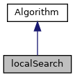
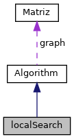
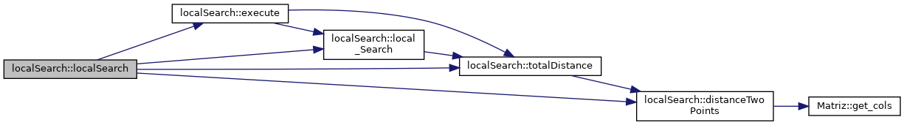
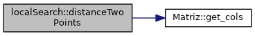
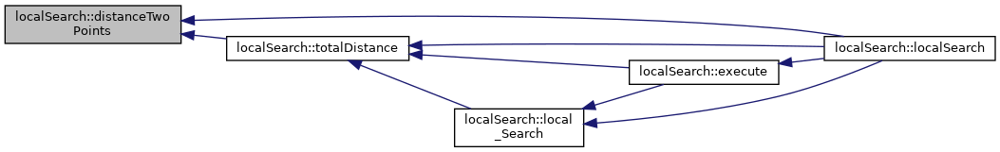
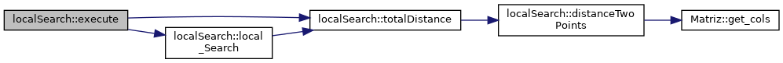
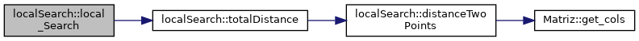
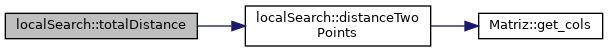
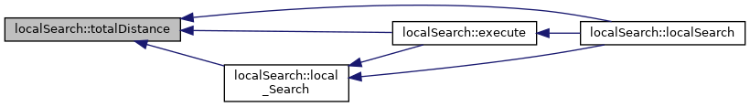

Implementation of the Local Search algorithm. More...
#include <localSearch.hpp>
Inheritance diagram for localSearch:

Collaboration diagram for localSearch:

Public Member Functions | |
| localSearch (std::string filename, int sol, std::vector< int > solutionGreedy) | |
| Construct a new localSearch object. More... | |
| std::vector< int > | execute () |
| Method that executes the algorithm. More... | |
| std::vector< int > | local_Search (std::vector< int > solution) |
| Returns the a vector with the improved solution after applying the local search algorithm. More... | |
| float | totalDistance (std::vector< int >) |
| Method that computes the total distance given a solution. More... | |
| float | distanceTwoPoints (int, int) |
| Calculates the distance between two points. More... | |
 Public Member Functions inherited from Algorithm Public Member Functions inherited from Algorithm | |
| Algorithm (std::string filename, int sol) | |
| Construct a new Algorithm object. More... | |
Additional Inherited Members | |
| Protected Attributes inherited from Algorithm | |
| Matriz | graph |
| int | solutionSize |
Detailed Description
Implementation of the Local Search algorithm.
Constructor & Destructor Documentation
◆ localSearch()
|
inline |
Construct a new localSearch object.
- Parameters
-
filename
Algorithm(std::string filename, int sol)
Construct a new Algorithm object.
Definition: algorithm.hpp:36
Here is the call graph for this function:

Member Function Documentation
◆ distanceTwoPoints()
| float localSearch::distanceTwoPoints | ( | int | point1, |
| int | point2 | ||
| ) |
Calculates the distance between two points.
- Returns
- float
Here is the call graph for this function:

Here is the caller graph for this function:

◆ execute()
|
virtual |
Method that executes the algorithm.
- Returns
- std::vector<float>
Implements Algorithm.
float totalDistance(std::vector< int >)
Method that computes the total distance given a solution.
Definition: localSearch.cpp:51
std::vector< int > local_Search(std::vector< int > solution)
Returns the a vector with the improved solution after applying the local search algorithm.
Definition: localSearch.cpp:20
Here is the call graph for this function:

Here is the caller graph for this function:
◆ local_Search()
| std::vector< int > localSearch::local_Search | ( | std::vector< int > | solution | ) |
Returns the a vector with the improved solution after applying the local search algorithm.
- Parameters
-
solution
- Returns
- std::vector<int>
float totalDistance(std::vector< int >)
Method that computes the total distance given a solution.
Definition: localSearch.cpp:51
Here is the call graph for this function:

Here is the caller graph for this function:
◆ totalDistance()
| float localSearch::totalDistance | ( | std::vector< int > | solution | ) |
Method that computes the total distance given a solution.
- Returns
- float
float distanceTwoPoints(int, int)
Calculates the distance between two points.
Definition: localSearch.cpp:61
Here is the call graph for this function:

Here is the caller graph for this function:

The documentation for this class was generated from the following files:
- include/localSearch.hpp
- src/localSearch.cpp